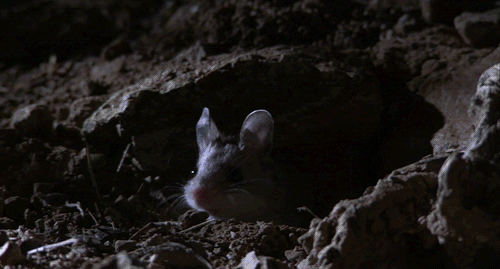

Бар "7 летних ночей"
Страница 7 из 40 •  1 ... 6, 7, 8 ... 23 ... 40
1 ... 6, 7, 8 ... 23 ... 40
Arlien- Людовед

- Сообщения : 1322
Дата регистрации : 2014-09-08
Re: Бар "7 летних ночей"
автор Demiurge-kun в Пт 9 Янв 2015 - 22:29
Не доели карочи...

Demiurge-kun- Хикка

- Сообщения : 216
Дата регистрации : 2014-09-13
Re: Бар "7 летних ночей"
автор Chess в Сб 10 Янв 2015 - 1:33
Но вообще... Кто сюжетку Юли слил, камрады?
З.Ы. А про Алисочку всё неправда, она нитакая.

Chess- Находка для шпиона

- Сообщения : 3798
Дата регистрации : 2014-10-05
Откуда : Город на краю света
Re: Бар "7 летних ночей"
автор peregarrett в Вт 13 Янв 2015 - 4:46

peregarrett- Находка для шпиона
- Сообщения : 3264
Дата регистрации : 2014-09-07
Возраст : 36
Re: Бар "7 летних ночей"
автор Arlien в Вт 13 Янв 2015 - 8:55
Arlien- Людовед
- Сообщения : 1322
Дата регистрации : 2014-09-08
Chess- Находка для шпиона
- Сообщения : 3798
Дата регистрации : 2014-10-05
Откуда : Город на краю света
peregarrett- Находка для шпиона
- Сообщения : 3264
Дата регистрации : 2014-09-07
Возраст : 36
Re: Бар "7 летних ночей"
автор Chess в Пт 16 Янв 2015 - 19:57

Chess- Находка для шпиона
- Сообщения : 3798
Дата регистрации : 2014-10-05
Откуда : Город на краю света
Re: Бар "7 летних ночей"
автор peregarrett в Пт 16 Янв 2015 - 20:07
peregarrett- Находка для шпиона
- Сообщения : 3264
Дата регистрации : 2014-09-07
Возраст : 36
Arlien- Людовед
- Сообщения : 1322
Дата регистрации : 2014-09-08
Re: Бар "7 летних ночей"
автор peregarrett в Сб 17 Янв 2015 - 2:37
peregarrett- Находка для шпиона
- Сообщения : 3264
Дата регистрации : 2014-09-07
Возраст : 36
Re: Бар "7 летних ночей"
автор Arlien в Сб 17 Янв 2015 - 4:03
Arlien- Людовед
- Сообщения : 1322
Дата регистрации : 2014-09-08
Re: Бар "7 летних ночей"
автор Chess в Сб 17 Янв 2015 - 10:32
Chess- Находка для шпиона
- Сообщения : 3798
Дата регистрации : 2014-10-05
Откуда : Город на краю света
Re: Бар "7 летних ночей"
автор malefactor в Сб 17 Янв 2015 - 21:42
Это что, восставшие мертвецы будут слугами Сундука? Нет, в могиле/под столом уютнее. Пусть он лучше на автора своё "воскрешение" кастует.peregarrett пишет:приглашаем некроманта?
Кстати, когда у нас Сундук Шахматами стал? Или это у меня белочка перед глазами бегает?
malefactor- Сыч

- Сообщения : 26
Дата регистрации : 2014-10-11
Re: Бар "7 летних ночей"
автор 7dl-kun в Сб 17 Янв 2015 - 22:02

7dl-kun- Находка для шпиона
- Сообщения : 3026
Дата регистрации : 2014-09-07
Откуда : здесь столько наркоманов?
Re: Бар "7 летних ночей"
автор Chess в Сб 17 Янв 2015 - 22:16
Месяца так три назад.Кстати, когда у нас Сундук Шахматами стал? Или это у меня белочка перед глазами бегает?
Chess- Находка для шпиона
- Сообщения : 3798
Дата регистрации : 2014-10-05
Откуда : Город на краю света
Re: Бар "7 летних ночей"
автор Chess в Вс 18 Янв 2015 - 0:42
Тащ автор, а вас никто и не трогает. У меня, конечно, мелькает периодически мысль вас в сюжетку Юли затащить, но я себя сдерживаю, как могу. Ибо нефик отвлекать, ящетаю.7dl-kun пишет:Не трогайте автора, пожалуйста. У меня впритык времени для того, чтобы вообще за комп садиться. А писать хочется!
Chess- Находка для шпиона
- Сообщения : 3798
Дата регистрации : 2014-10-05
Откуда : Город на краю света
Re: Бар "7 летних ночей"
автор peregarrett в Вс 18 Янв 2015 - 2:14
Нафааааааняяяяя! Сундук! Сундук украаааалиииии!!!malefactor пишет:Кстати, когда у нас Сундук Шахматами стал? Или это у меня белочка перед глазами бегает?
peregarrett- Находка для шпиона
- Сообщения : 3264
Дата регистрации : 2014-09-07
Возраст : 36
Re: Бар "7 летних ночей"
автор Гость в Вс 18 Янв 2015 - 5:01
Я тут зарисовку накидал. Зацените:
- Сбой системы:
- Облака. Они так медленно и лениво ползут по небу. Когда смотришь на них, почему-то не задумываешься, что вот так же лениво они ползли над нашими родителями, их родителями и родителями их родителей. И над нашими детьми тоже, наверное, будут ползти…
- Славя! – Громкий окрик знакомого до боли голоса выдернул девушку из послеобеденной дремы.
Быстро поднявшись со скамейки, пионерка машинально поправила форму:
- Да, Ольга Дмитриевна. Вы что-то хотели?
- Отдыхаешь? – Вожатая дружелюбно улыбнулась. – Это правильно. Надо иногда.
- Да, разморило что-то. – Славя немного смутилась.
- А у меня для тебя есть ответственное поручение. Я же только что из райцентра вернулась и привезла с собой пополнение!
- Новичка?
- Да. Только эту неженку в дороге, видимо, укачало. Сходи к автобусу, разбуди человека и пошли ко мне на регистрацию. – Ольга Дмитриевна снова широко улыбнулась. – Справишься?
- Конечно!
Настроение как-то само собой резко повысилось. Поправив изящным жестом свою незатейливую прическу, Славя бодрым шагом направилась к остановке.
Ну, надо же! Новичок! Почти в самом конце смены! Знакомиться с новыми людьми всегда интересно, а если ещё он будет интересоваться девушками больше чем кибернетикой, так это вообще замечательно! В мыслях девушки уже нарисовался образ высокого темноволосого парня с темными, почему-то грустными глазами. Она обязательно с ним подружится, он будет помогать ей, пригласит потанцевать на дискотеке, а потом, вечером, после похода… Славя сама не заметила, как дошла до ворот, отворила створку и выскользнула наружу.
Возле открытой передней двери автобуса кто-то стоял. Яркое солнце не позволило сразу разглядеть вновь прибывшего, потому девушка сразу же сделала несколько шагов на встречу незнакомцу и, приветливо улыбнувшись, сказала:
- Привет! Ты уже проснулся…
Ещё не докончив фразу, Славя с удивлением поняла, что ошиблась. Следовало сказать не «проснулся», а «проснулась». Прямо перед ней стояла высокая, крепко сложенная, чуть смугловатая девушка. Из под чёрных волос чуть ниже плеч на Славяну в упор смотрели большие карие, почти черные, глаза. Взгляд какой-то необычный, холодный, не добрый. Да и одета новенькая странно: свободные брюки в светло-серую пятнистую окраску, высокие шнурованные сапоги наподобие военных и черная футболка.
- Тебе… к вожатой… надо… - Славя почему-то растерялась и никак не могла навести порядок в голове. Что-то как будто пошло не так, как должно было.
- Ты кто? – Новенькая обладала низким, приятным голосом.
- Я Славяна. Но все зовут Славей…
С громким хрустом размяв пальцы и шею, новенькая быстро, но очень внимательно огляделась и представилась:
- Мария. К вожатой, говоришь? Ну что же – веди.
Гость- Гость
Re: Бар "7 летних ночей"
автор Chess в Вс 18 Янв 2015 - 7:02
Chess- Находка для шпиона
- Сообщения : 3798
Дата регистрации : 2014-10-05
Откуда : Город на краю света
Re: Бар "7 летних ночей"
автор Гость в Вс 18 Янв 2015 - 13:42
Chess пишет:Вот оно, начало событий третьей долговременной.
Щито?
Гость- Гость
Re: Бар "7 летних ночей"
автор Chess в Вс 18 Янв 2015 - 14:08
Chess- Находка для шпиона
- Сообщения : 3798
Дата регистрации : 2014-10-05
Откуда : Город на краю света
Re: Бар "7 летних ночей"
автор Гость в Вс 18 Янв 2015 - 14:30
Дезертир.
Еще чуть-чуть…Немного… почти дошел. Даже не верю в такую удачу, сколько хороших людей погибло… Виктор… Илья… Яна…Саныч .Казалось, что их уже ничем не возьмешь. Они видели горящие города, лагеря смерти, пережили биологическую зачистку, сражались и погибали в последних людских армиях. Армии… Смешно. Четыре года сражались против 3 миллионной орды. Хотя, кому врать, да и зачем? После ТОГО дня МЫ ИМ были уже не страшны. Тараканы, ползущие на ядерных пепелищах. Так сказал тот капитан. ОНИ даже с нами не воевали. Против нас были люди. Особые бригады чистильщиков. Те, кто выбрал медленное и относительно комфортное вымирание раба вместо быстрой смерти «свободного». Если не для себя, то для своих детей. Их можно понять. Почти дошел. Перевалю через кордон и все. Отвоевался. Хрен кто меня найдет среди потока беженцев.
Впереди послышался шум моторов. Я на рефлексах отскочил в ближайшую у дороги рощицу и залег. Через пару минуты показалась колонна бронетранспортеров. Десяток старых российских БМП, пара грузовиков и даже пара Т-72. Плюс еще около 2 рот солдат сверх того, что в «коробках» Зелено-белый флаг. Сибирская директория. Интересно, а для чего их пригнали? Ростовскую базу сровняли с землей. Южный узел и остатки Сил Самообороны (если они, конечно, есть) по плану отступают к Тамани. Психов, которые попрут через Донецкие поля в расчет не берем. Там без полной химзащиты минут за пятнадцать помрешь. По идее, всех должны гнать туда, к Ростову, на зачистку. Это в 40 километрах на юго-запад. Вот и откуда их надуло?!
Ребятишки явно беспокоились. Уже почти попрощался с жизнью и приготовился к бою, а они…взяли и проехали! Минут пять лежал и НЕ-ВЕ-РИЛ. У них что, «ищеек» нет? Да ни в жизнь! Торопятся значится. Да так что устав нарушают.
Обождав десяток минут, я побрел дальше…
Ближе к вечеру в поисках ночлега набрел на остатки какого-то села. Оно было брошенным, Покосившиеся полуразрушенные домики. Заросшие дворы. Захиревшее еще до Войны, оно, похоже, ее не увидело. Хотя… кто знает. Тихо пробираясь сквозь улочки. И вдруг…
-Положи автомат на землю – Услышал я тихим мальчишечий голос, и почувствовал спиной дуло. Делать было нечего, пришлось подчиниться - А теперь аккуратно повернись. Только без резких движений, а то дырок понаделаю.
Ошибочка вышла. Передо мной, со стареньким ППШ (и где только отрыла?) и в гимнастерке времен Великой Отечественной, стояла молодая невысокая девушка. Огненно-рыжие волосы едва закрывали уши. Большие голубые глаза смотрели с прищуром. На вид – чистая «пацанка» Вообще, если бы не «особенности» фигуры принял бы ее за мальчика.
-Ну и кто ты такой? – спросила «лисичка»
-Сержант Сычев. Да опусти ты «раритет», свой я.
-И кому ты «свой»? РОА? Силы Самообороны? «Возражденец»? Или Югорос? Сюда, знаешь ли, и Русбат иногда «заглядывает»
-Четвертая ударная армия. 16-я Волгоградская бригада.
-Так ты федерал? Медальон покажи, только медленно.
Достав из внутреннего кармана «опознавалки» бросил ей. Девчонка их внимательно осмотрела, прощупала кромку и левый край, хмыкнула и вернула. Повезло, что нашел у старшины свои «висюльки». А то грохнула бы меня эта «партизанка». Хотя серьезной проверки мне не пройти. Мигом особисты налетят.
-Как звать то? – уже более миролюбиво спросила «лиса».
-Семен.
-Ульяна. А где…
-Рассеяли нас – начал врать я – Похоже я заплутал…
Она внимательно меня осмотрела, снова хмыкнула.
-Чай будете товарищ сержант?
-А есть?
Ульяна кивнула и двинулась вдоль улицы. Подобрав верный АК, поспешил за ней. Остановились мы у дома на окраине. Внешне он не чем не отличался о своих собратьев. А внутри….
-И где ты все это нашла? Ограбила Красную армию?
-Будете смеяться но… да. Тут недалеко наткнулась на подземный схрон. Похоже он еще со времен Отечественной. Съестные припасы понятное дело испорчены, а вот оружие… Оно было в «смазке». Солидол или еще чего. Ну, я и перетаскала. Всяко лучше, чем нечего.
Фортануло девке. Навскидку тут пара десятков «мосинок» Десяток ППШ. Пяток «судаевых». Даже парочка «Максов» И дофига ящиков с патронами. О… и даже гранаты. Контрастом в этом «музее» были четыре «калаша», СВД и «Печенег». Тот, кто скажет, что это все «старье» будет конечно прав. Вот только когда делишь один «калаш» на двоих и растягиваешь два рожка на день боев…
-А не «протухло»?
-Нет, все исправно. Металлолом я в схроне побросала. Вы на кухню проходите.
Дальше - больше. Дизель-генератор. Вот …., хорошо рыжая устроилась. Впрочем, чай мне погрели на печке. За дым она не беспокоилась, сказала, там отвод с секретом. К чаю была шоколадка из сухпойка. Да… не девушка, а воинская часть. По крайней мере, по снабжению. Плохо только с личным составом. Он конечно симпатичный, но его мало.
-Спасибо тебе. Ульян. А ты откуда ты про фокус с медальном знаешь?
-У меня брат в Таманской танковой служил…- помрачнела она.
-Извини.
-Ничего, вы же не знали.
-Ульян, давай на ты. Нечего тут выкать. Не такая я большая птица. А почему ты со «шпагой» ходишь? У тебя ж автоматы есть.
-Привыкла уже. «Новинки» я недавно раздобыла, тут отряд «возрожденцев» положили. Ну… а я… чего добру пропадать? А что вы…ты делать будешь?
-Своих искать. Еще бы знать где. – прикинулся я дубком – Погоди… говоришь отряд перебили? – Изобразил я озабоченность – И чего эти суки здесь забыли? Нечего странного не видела? – Главное - ее отвлечь, а то начнет задавать неудобные вопросы.
-Да нет. Да и с чего бы? Места глухие. Нечего важного тут и до Войны не было. А уж после…Тут рядом Пустошь. Какой дурак будет строить что-то в подобном месте?
-Как знать… как раз в глухих местах и строят. Да и я на стрелков Директории наткнулся. Похоже ищут чего… или кого.
-Так наступление же! На юге три дня долбило.
-Нет. Это не зачистка. Да и нечего там зачищать…
-КАК?!!!!
-Ростов взяли. Хотя и брать там было уже нечего. Термические бомбы падали как снег зимой. Со смертью тоже не считались, только на Внешнем вале потеряли не меньше трех дивизий. Там, вроде, даже спец части Союза видели.
-Может успели спастись? -со слабой надеждой спросила она.
-Может и успели… но только со внешнего кольца обороны. Всех кто был внутри...
-НЕТ. ТАМ ДОЛЖЕН КТО-ТО ВЫЖИТЬ! Беженцы…
-Ульян…. Там были Крематоры…
Она бессильно рухнула на стул и зарыдала. Что такое Крематоры мы и сами не знаем. Больше всего они похожи на огромных стальных пауков в полтора человеческих роста. Невероятно быстрые и живучие. Даже разорванными на куски, они продолжают к тебе тянутся. Как-то видел их «начинку». Мешанина из плоти, проводов и какой-то синей жижи. И после них не остается НИЧЕГО живого. Только сплошной многометровый слой пепла.
-Дядя Саша…Женя… как же так? - она уже даже не плакала, она тихо всхлипывала и смотрела пустыми глазами в стену…
Я вышел на крыльцо. Сколько раз уже такое видел. Лучше оставить ее на время одну. Уже стемнело, достаю из кармана пачку сигарет. Хм… крайняя. Нехорошо. Выбросив мусор в кусты, чиркнул спичкой и затянулся. Спасибо Саныч, и пусть земля тебе будет пухом. Я хмыкнул. Как в воду глядели. Свой секрет по добыче «палочек» бывший полковник унес с собой. Высмолив сигарету и постояв минут пять вернулся в дом.
Хозяйка спала, прямо за столом. Похоже, не выдержала нервного напряжения, И что с ней делать? Аккуратно подхватив спящую, я перенес ее в спальню. Положив Рыжика в «кровать»( на деле старый заштопанный матрас) И уже собрался уходить…
-Останься. Не хочу быть одна.
Спорить я не стал. Три дня в пути почти без сна, скрываясь от егерей и почти без патронов. О чем тут думать? Она тихо прижалась ко мне, и спустя несколько минут забылась в тревожном сне.
-Спокойной ночи, Лисенок.
Какое-то время я просто лежал. Мерное дыхание девчушки меня постепенно успокоило. Однако сон не шел. Скорее полудрема на границе фантазии и реальности. Мне бредилось, что рядом лежит ОНА. Такие родные, всегда немного грустные, глаза. Их зелень, похоже, будет преследовать меня везде. Как и улыбка. Эх…. Ведьмачка моя…
Разбудил нас шум мотора. Война учит многому. Например, как «заводится» с пол оборота. Иначе можно проспать собственную смерть. Выглянув в окно мы синхронно выругались. И было отчего. В село тихонько вкатила «коробочка» и из нее высыпал взвод солдат. Причем ребятки были непростые. Добротная форма. Сытые рожи. Новенькие стволы. И все в черном. Жандармерия, вашу мать! И явно кого-то ищут. Кого? Меня? Нет. Я так не гадил, чтоб за мной сразу жандармы. А может Улька?
-Слушай, а не за тобой?
-Ты чего? Это что ж надо наделать чтоб «черных» подняли?! Я тут иногда раненым и беженцам помогала, это да. Но это все, правда!
Не врала, по глазам вижу. Да и какая ….. разница, зачем они притопали. Чего делать? Нас же сейчас накроют!
-Черный ход есть?
Она кивнула и тихонько отползла. Я за ней. Ага, обломитесь! Они уже и там. Три здоровенных бугая в черной форме шли вдоль улицы, И что самое поганое, явно к нам. Обложили.
-«Печенегом» пользовалась? - Она утвердительно кивнула - Патроны? - снова кивок. - Тащи, - Кивок в стону окна с видом на «коробку» - только тихо. Как только начну, прижми.
Сам мигом в «арсенал». Так, рожки к АК и пяток гранат. И топорик не забыть. Что ж, к встрече готов. Встать возле двери, Так. Теперь «гости» очень удачно будут ко мне спиной. Для меня удачно. Ульянка уже перетащила пулемет. Тоже удачно. С прохода ее не видно. И вот двое рослых детин проходят в коридор. Ну, поехали! Один тут же получает обухом по бошке. Это раз. Второй только хочет развернутся, но поздно. Влажный хруст разносится по дому. Оставляю застаревший топор. Это два. Все заняло пару-тройку секунд. Третий стоит в проходе и соображает что к чему. Слишком медленно. Наваливаюсь на него, «перо» в бок. Пытается кричать, через пару секунд затихает. Это три. Добиваю ножом первого. Это четыре. Можно считать все прошло удачно. Ну-ка, как там дела на западном фронте? Надо посмотреть…
Пока я «принимал гостей» Лисенок тоже «веселилась». Заслышав возню, открыла огонь. «Черные» расслабились, не знаю, где они были до этого, но явно не на фронте. Кучковались возле транспортника, прям мишень в тире. В общем, около десятка положила сходу. Раненых тоже порядком. Новой очередью прошила машину вдоль борта. Та вспыхнула как спичка, а потом как рванет! ОХ…Ь, это чего?!! У них что там было? Или… Смотрю на маркировку гильз. Красная. Бронебойно-зажигательные. Да и они добавили. До сих пор «салют» стреляет. Не завидую. Там сейчас ад локального масштаба.
Автоматная очередь…
Однако рано я списал жандармов. Нас пытались подавить огнем. Не меньше десятка стволов. Так, головы не поднять.
-К черному ходу, быстро! БЕГИ!! –хорошо, что подчиняется без вопросов.
Не люблю играть в героя, но девка же! Отстреливался я долго. Минуты полторы. А потом…
Граната… Взрыв… Боль… и Тьма…
-И что вы скажите в свое оправдание? – Я что не умер? Похоже. На том свете не было бы так погано. ОЙ, мама!! Пытаюсь разобраться, что к чему. Глаза открываются не с первой попытки. Хотя разница небольшая, все дико плывет. Передо мной было два пятна. Ну а я собственно валялся на земле.
-Госпожа…-голос у говорившего затравленный. Прямо как у смертника перед казнью. Его резко обрывают.
-Молчать! Поисковый отряд практически уничтожен. Погибло несколько важных ученых, за которых вы, Воронов, отвечали головой. И самое главное. ВЫ УПУСТИЛИ ПУТНИКА. – Чеканя каждое слово, произнесла «госпожа». Голос у нее был странный. Мягкий. Мурчащий. Но при этом отдающий сталью и смертью.
-Го…-послышался выстрел, и то из «пятен» что покрупнее, упало.
-Госпожа. – третий голос - Мы поймали девчонку. Передо мной возникло еще два черных пятна тащивших третье, кричавшие голосом Ульяны:
-Пустите… Твари… Предатели…
-А где остальные? – спросила «госпожа». Ульяна меж тем затихла.
-Она оказала сопротивление. Остались только мы, госпожа Юви. Творилось что-то непонятное. Рыжик только что яростно кричавшая, тихо поскуливала.
-Да? Что ж… - недолгое молчание – Из нее выйдет неплохая рабыня, у нас любят экзотических зверюшек. На стерилизацию ее, и в Псарню.
-Нет.. нет…
-Уймите ее. Только не попортите шкурку.
Тут мне стало не хватать воздуха, и я зашелся кашлем.
-Надо же, еще не сдох!? - Удивление напополам с любопытством - Да чего же вы, люди, живучи.
Ко мне подошли. И я смог рассмотреть ее.
Длинные каштановые волосы. Красивое молодое лицо. Глаза с желтой радужкой и вертикальным зрачком. И большие кошачьи уши. Нека. Враг.
-Госпожа, мы его сейчас…
-Не стоит. Зачем мучить его? - уже мне – Спи спокойно, человек.
Последнее что я увидел, был вороненый ствол пистолета. Вот теперь точно, все…
Ты пойдешь со мной?
Гость- Гость
Re: Бар "7 летних ночей"
автор Гость в Вс 18 Янв 2015 - 14:34
Пролог.
Что за вечер? Погода - дрянь, концерт - накрылся, сигареты – кончались. И транспорта нет. Битый час стою на этой треклятой остановке. Прибавите двадцать шесть градусов мороза и выхлопные газы. Да где 410 носит? Они там что, все уже отпразновались? 31 конечно, но вроде еще рановато, 7 часов только. Да ну их в баню!
В конце концов, что меня ждет дома? Телек, пара покупных салатов да жареная курица с шампанским. Нет уж, увольте! Так, Вика вроде к себе звала. Где там у меня мобильник?
-Вик, привет, чего делаешь?
-Оливье. А по какому поводу интересуетесь?
-Помощь не нужна?
-Опять пролетел? - мигом догадалась она.
-Угу… - взгрустнул я
-Горе луковое! Бросали бы вы это дело. Из вас рокеры…
Я обижено засопел в трубку.
-Ладно –смеется она – Дуй к нам, а то Серега уже не знает чего делать.
-Помог бы.
-Да ну… Его на кухню можно пускать, только если кухни не жалко.
Это да. Сразу вспоминается, как Серый пытался сделать Вике сюрприз. Сюрприз получился. Хорошо, обошлось без врачей и пожарных. Хотя мултиварку пришлось выбросить…
-Ты только сметану по дороге захвати. 20-ти процентную, большую банку.
-Больше нечего не надо?
-Да нет, вроде все есть. Давай, ждем.
Убрав сотовый, в очередной раз подумал - какой же я осел. Вика – моя старая школьная подруга. Вроде бы даже вздыхала по мне. Ну а я… как баран этого не видел. И ее толком не замечал. А когда заметил, было уже поздно.
Так, нечего придаваться скорбным мыслям! Праздник же!
Похоже автобусов тут не дождешься. Что ж, возьмем попутку. Деньги же нужны, чтоб их тратить?
-Шеф, до Нейбута сколько возьмешь?
-Четыреста.
-Много. Давай за двести пятьдесят.
-Триста. Праздник все ж.
-И я о том. Ладно, триста, так триста.
Ну, вот и моя карета. Да и три сотни не так уж и дорого. Все же другой конец города. Да и тепло в салоне. Так тепло, что меня разморило. По этому самого столкновения я почти не запомнил. Только номер.
410.
Дождался…
День первый.
“Тук-Тук-Тук. Добрый вечер, Глюк.” К чему это я? А как бы вы реагировали, если бы попали в лето? А до этого была зима. Хотя, давайте по порядку.
Последние, что я помню, была авария. А потом я вдруг очнулся в автобусе от нестерпимой жары. Шутка ли, я в пуховике и ватных штанах, свитере, да и по мелочи всякое, а на улице наверно градусов пот тридцать. Хотя меня опять не туда несет. Значить очнулся я, жара, салон залит светом, вокруг ни души. Еще, не осознавая как я вляпался, выхожу на свежий воздух…
-Какого…!??
“На третий день Зоркий Глаз заметил, что у дома нет одной стены.”
Сочная зелень. Яркое солнце. Щебетание птичек. В декабре!? Плюс ко всему, какая-то общая неправильность пейзажа. Как бы объяснить… Все слишком девственное, яркое, нетронутое. Ни шума машин, ни криков, ни суеты. Воздух пахнет травами и дорожной пылью, а не бензином и гарью. Если бы не дорога да линии ЛЭП я бы решил, что тут людей вообще не было. Автобус, на котором я приехал оказался “Икарусом”. А я по началу подумал, что это какая-то иномарка. Помню-помню, катался на таких когда был совсем мелкий. Так же обнаружился бывший пионерлагерь. Собственно к нему меня и “подвезли” Вот, кстати еще деталь. Автобус был 410 номером. Даже если опустить время года (“Ага, сделаем вид, что тело с топором в черепушке тут всегда лежало”)то меня могли бы увести за город… да, к черту! Вокруг лето, я фиг знает где! Что тут творится?!
“Мы явно больше не в Канзасе”
Вот тут меня пробил озноб. Это были не мои мысли!
“О, меня заметили! Молодец, и года не прошло. Слушай, ты всегда такой тормоз или мне просто везет?”
-Ты кто?
“Я твоя совесть” -ответили мне со всей серьезностью.
???
Дальше был только заливистый смех. Да “оно” издевается! Страх тут же выветрился. Меня взяла злость.
-Прекрати!
“Не могу! - давясь от смеха, еле “выговорило” “оно”- Ты представь: стоит типус, одет как полярник на выпасе, глаза по пятаку, челюсть на земле, и он пытается продумать МЫСЛЮ. Ну, чисто Чукча из анекдотов! И вообще, я ради тебя стараюсь, а то расклеился тут как барышня.
-Нечего я не барышня. –насупился я. – Ты вообще кто?
“Не знаю”
-Ладно. Как оказался в моей голове?
“Не знаю”
-Ну, а имя то у тебя есть?
“Не знаю”
Блин, ну точно контузия, шиза залетная! Крепко же меня стукнуло.
“Сам ты шиза с контузией! –кажется на меня обиделись.
-Ну и как мне тебя называть? Придумай тогда себе имя.
“Ладно…. О, мне нравится Юлия!”
-Это женское имя.
“Так я, вроде как не мальчик, кэ-э-эп”
…
Это был чистый нокаут. У меня в голове глюк женского пола. Сбылось мечта идиота! Хотел себе девушку? Большую и чистую любовь до гроба? Получите и распишетесь.
“Щаззз, только шнурки поглажу! Больно ты мне нужен. Размечтался! И на счет идиотов. Со мной можно говорить и мысленно. А то прибегут дяди в белых халатиках, и познакомишься ты с Наполеоном, Сталиным, Цезарем и другими очень интересными личностями”
Пришибленный проблемами и странностями, я присел на ступеньку автобуса, подстелив пуховик, так хоть на что-то сгодится. Так мне надо успокоится и подумать.
Из тяжелых дум мня вывело появления нового действующего лица. Ко мне незаметно подкралась девушка…
“Незаметно, как же! Она тут уже пол часа стоит. К тебе так и танковый полк может “подкрасится незаметно””
“Утихни, язва! У меня уже мозги из-за тебя кипят”
“Было бы чему кипеть”
Так вот. Незнакомка было на вид лет двадцати, приятное доброе лицо, русые волосы заплетены в длинную, до пояса, косу. И… еще она была в пионерской форме. Галстук юбка, рубашка с шевроном. Все как положено.
“Откуда ты знаешь, КАК положено? Ты ж настоящих пионеров не разу не видел”
“Тебе то откуда знать?”
“Я знаю и помню то, что помнишь и знаешь и ты. Хочешь, расскажу как ты облажался на своем первым свидании?” - елейным голосом, осведомилось это чудовище.
Я покраснел как помидор. На счастье, пионерка похоже списала это на смущение.
-Здравствуйте… Евгений? - дождавшись утвердительного кивка, продолжила – а я Славяна можно просто - Славя. На солнце припекло?
Да, но мне уже намного лучше…Славя. – ну не выкать же, мы ж почти ровесники, я только чуть постарше.
-Я рада. ОЙ…-ее лицо стало озабоченным - нужно срочно бежать в Главный корпус. Ольга Дмитриевна давно тебя ждет. – и схватив меня за руку быстро потащила в лагерь.
У меня меж тем как будто что-то щелкнуло.
410 номер. Лето. Лагерь. Пионеры. Славя. Ольга Дмитриевна. Да нет, не может этого быть…
-Славя, а у вас тут парня по имени Семен не было?
Она как-то странно на меня посмотрела.
-Был. Он руку сломал, его в райцентр увезли.
-К-к-ак?
-С крыши упал и сломал. Там говорят перелом сложный.
“Шел, поскользнулся, упал, потерял сознание, очнулся – гипс”
“Не смешно. Лучше скажи, что думаешь?” - поразительно, как быстро я к ней привык. Хотя, тут ТАКОЕ вырисовывается… Раздвоение личности отдыхает.
“Сама в ауте. Похоже это - Лето”
“По-ляр-ный пи-сец. Осталось чтоб ты оказалась Той Самой Юлей”
“Жаль, но нет. Хотя, от собственного тела я бы не отказалась. Опять же хвостик и ушки…Экзотика”
А мы меж тем подошли к главному корпусу. Нечего особенного. Небольшое, в меру обшарпанное, но ухоженное здание. Внутри то же самое. Старый линолеум деревянные панели, стульчики вдоль стен. Все чистенько и аккуратненько. Остановившись возле очередной двери табличкой “Отдел кадров” Славяна тихонько заглянула в кабинет.
-Можно, Ольга Дмитриевна? Я со Ставрогиным…
-Так пусть проходит быстрее. И где он только бегал?
-Все. Я пошла, у меня дела. Удачи тебе – сказала девчонка и скрылась
Что могу сказать… Дмитриевна была как в новелке. С поправкой на реальный мир.
“Минус мултяшность, галстук и панамка, плюс начальственная ярость. Вылитая чекистка на допросе. Не находишь?”
Воображение мигом нарисовало соответствующую картину. Прокуренное помещение затянутое полумраком. Тусклая лампа на столе. И Ольга в кожанке, с “товарищем Маузером” в кобуре и папиросой в зубах. Я отогнал видение. Как покурить хочется, кто б знал! Пол царства за сигарету!
-…правильным вожатым! - ой, кажись “чекистка” двинула пламенную речь, пока я витал в облаках.
“О чем она говорила?”
Чувствую себя как последний двоечник у доски.
“Поздравляю тебя, ты у нас вожатый-практикант из какого то педагогического, присланный на замену пострадавшему Семену. Вас, практикантов, здесь целая группа. Выпустили в поле, пороха нюхнуть. Мне детей уже жалко! Бан-тян - ваше непосредственное начальство. Ну, а дальше все стандартно, просто замени пионера на вожатого и все”
“Канон - капут”
“ООС – привет”
-…бегом в столовую. – Зараза! Опять я все прослушал.
“А теперь она про что?”
“Ээээээх. Не умеете вы, мужики, делать несколько дел разом. Быстро подпиши бумажки, потом дуй на склад, получай форму. Ну а потом пулей в столовую, там твои “подопытные” дежурят, мелкота какая-то из четвертого отряда. После ужина сюда - будет летучка”
-Вам все ясно, Ставрогин? - меж тем дальше лютует “ЧК”
-Да. - с готовность пожираю глазами “любимое” начальство.
“Не извольте беспокоиться, т-а-арищ Банхаммер. Усе будет в лучшем виде! Разрешите выполнять?”
-Тогда рысью марш.
Быстренько черкнул подпись где надо, и с пол оборота на склад. А то ОД еще куда припряжет, с нее станется! Найти оказалось несложно, он был пристроен к корпусу. Заведовал там Павел Егорович. Что могу сказать… Егорыч был дедок сухой, жилистый, невысокий и лысый, как калено. Очень веселый. При этом у него были живые, яркие глаза и он умудрялся быть сразу везде.
“Мировой дед” - тут я с ней был полностью согласен.
Получил я стандартный набор: рубашка с коротким рукавом, брюки, ремень, шлепанцы и, конечно, красный галстук. Ах да, еще я ожидаемо омолодился. Ненамного, лет на пять, так что выглядел я где-то в районе двадцати. На вопрос о моей “одежи”, соврал что с Севера. Было неудобно, но что поделаешь…
И вот я весь такой из себя “правильный вожатый” выхожу из каптерки. Ну, почти, галстук я, несмотря на все мучения, присобачить не смог. Поэтому, на манер оригинальной ДваЧе, повязал на руку как “дежурку”.
“КрасавЕц, – сарказм можно было черпать ведрами – хоть сейчас женить.”
“Не язви, лучше подумай, что нам делать” – “высказался” я, выходя на главную площадь. Генды, кстати, не было. Вместо него был стандартный Ильич.
“Ну правильно, должен же хоть кто-то из нас думать. А что делать… Пока то, что сказала Олька. А уж после отбоя решим, как быть”
Вот и столовая. Я открываю дверь и…
Дзинь! Бултых!
…я весь мокрый, а у моих ног ведро.
Детишки тут же начали зубоскалить. Но мне было фиолетово. Конкретно сейчас меня интересовала одна наглая рыжая мелкота с улыбкой во все тридцать два и пращуром хитрых голубых глаз. Причем, она очень старалась сделать невиновный вид. Это меня и убедило окончательно.
“Это война, детка. Ну ты у меня получишь!” - изрекла Юля
“Я думал тебе нравится, издеваться надо мной”
“Вот именно, МНЕ. Это мое святое право, остальным такое не дозволено. “Браконьеры” должны понести заслуженную кару! Удар по тебе, это удар по мне. А такое я не прощаю”
Что на это сказать я не знал.
“И вообще, чего злишься? Я думала тебе нравится Ульянка” - с деланным удивлением осведомилась Юлька – Чего это вдруг ее шутки тебе не по душе?”
Вопрос явно был риторическим. Я меж тем приближался к рыжей. Напустив на себя жуткую серьезность. У нее на лице появилось удивленно-настороженное выражение.
-Как звать, какой отряд? – спросил чисто для приличия. Хотя, может я ошибся и не все так плохо?
-Ульяна я, Краснова. Четвертый отряд.
“ЗА ЧТО?!! Так, из этого лагеря надо срочно линять.
“Смени пеленку и заканчивай ныть. Концерт продолжается”
-Быстро все убрать. И после ужина все уберешь. Одна.
-ЗА ЧТО??
-За душ. Я ваш новый вожатый, Евгений Константинович.
-Но это не я!
-Почти верю. Убирай.
И Улька поплелась в сторону кухни, ворча по дороге что-то про стукачей которые не дают жить нормальным людям.
“Суров ты, начальник. Ладно, пошли на склад, возьмем сухую одежку”
-Приглядите? – спросил я у вышедших на шум поварих.
-Конечно-конечно.
Дааааа, попал я. Хватило одного упоминания Мелкого Чудовища, чтоб мне сочувственно улыбнулись, и без вопросов выдали новый комплект. Уж не Рыжая ли отправила моего предшественника на больничную койку? Я начал всерьез обдумывать планы побега, за что своей “напарницей” был заклеймен дезертиром и пораженцем и выслушал лекцию на тему “Враг будет разбит, победа будет за нами!”
Когда я вернулся, в столовке был уже весь лагерь. За одним из больших столов сидела Чекистка в окружении…ну надо думать практикантов.
“Гениально, Шерлок! Ты сам до этого дошел или кто умный подсказал?”
Взяв еду, побрел к ним и сел на свободное место. Пожелал всем приятного аппетита. Огляделся. Да, знакомы все лица, правда, чуток постарше, всем на вид около двадцати. Рядом со мной о чем-то болтают Эл и Шурик ака Самоделкины. От оригиналов почти не отличаются, разве что… мужественнее что ли. Во всяком случае, Электроник на гееподобного не похож.
“А ты проверь! Отведи его в сторонку и признайся, что влюбился с первого взгляда. Мне интересно посмотреть, как он отреагирует. Как думаешь, Шурик сильно будет ревновать?”
Неимоверным усильем сохраняю обычное лицо.
Далее Ленок. Тоже почти по стандарту, только волосы распущены, доходят до плеч и естественно не фиолетовые. Скорее иссиня-черные. Уткнулась задумчивым взглядом в тарелку и сидит, ковыряет ее содержимое.
“Наверное, любимое оружие забыла, вот и грустит. А давай ее обрадуем? Подарим ей набор кухонных ножей. На все случаи жизни и от любых конкурентов”
Молчу. Просто молчу.
Славя. Что-то обсуждает с Дмитриевной.
“Походы в лес, на что спорим? Она там каждый пенек знает. Да и ее там каждая букашка уже запомнила и детально рассмотрела. Эх, не тем она занимается. Хочет помогать людям? Пускай объединяется с Виолой и открывают курсы пикапа для чайников. Что-то вроде “Как заполучить парня/девушку за 7 дней или быстрее” Поверь, клиентов будет много”
Я спокоен. Абсолютно спокоен. Почти.
Мику. Не люблю японок. Страшненькие они. Но тут, надо думать благодаря русскому папке-инженеру, все обошлось. Довольно приятная внешность. Темные волосы и правда заплетены в два хвоста. До лапоток, думаю, достает. И главная изюминка - некоторые пряди окрашены ярким ультрамарином. Хм…болтушка. Обстреливает Двачевскую со скоростью 400 слов в минуту. Как та хоть что-то разбирает?
“Тренировка и опыт, брат, тренировка и опыт. А девчонке с такой способностью надо становится репером. Или юристом. Нет, лучше дипломатом. Будет секретным оружием. Представь, посылают ее на переговоры. Первые пять минут Мику просто не понимают. Еще через три - начинает болеть и пухнуть голова. Далее, пятнадцать минут собеседники пытаются вставить хоть слово или, на худой конец, добиться бумаг. Когда это, слава богам удается, и дело казалось, сдвинулось с мертвой точки, она начинает забрасывать их сотней любых тем кроме главной. Они ей, например, про поставки газа и нефти, она - какое замечательное небо за окном, и как цвет этого неба подходит к цвету глаз посла, а так же как интересно было лететь на самолете, и какая там была вкусная еда, но дома, безусловно, лучше, особенно если по маминому рецепту. Через пол часа такой обработки у всей делегации глазки будут в кучку, подпишут все что угодно лишь бы оттуда уже уйти”
От всех этих рассуждений голова заболела у меня.
ДваЧе…
“А слабо назвать ее так в лицо?”
…выглядит более серьезной, чем оригинал…
“Значит слабо”
Гость- Гость
Re: Бар "7 летних ночей"
автор Chess в Вс 18 Янв 2015 - 14:49
Юля к Шизе не имеет никакого отношения. По крайней мере, у Семёна точно.“Сам ты шиза с контузией! –кажется на меня обиделись.
-Ну и как мне тебя называть? Придумай тогда себе имя.
“Ладно…. О, мне нравится Юлия!”
Но вообще понравилось, яп почитал.
Chess- Находка для шпиона
- Сообщения : 3798
Дата регистрации : 2014-10-05
Откуда : Город на краю света
Страница 7 из 40 • 1 ... 6, 7, 8 ... 23 ... 40